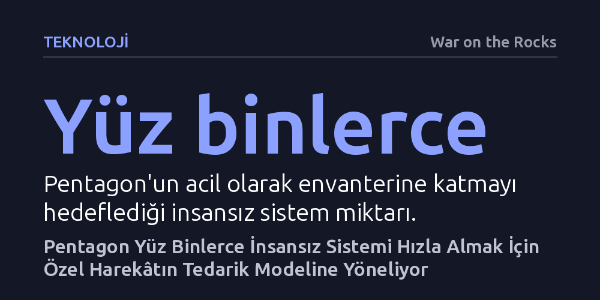

TEKNOLOJI · War on the Rocks · 2026-10-27
Pentagon, yüz binlerce insansız sistemi hızla tedarik edebilmek için özel harekât birimlerinin ticari teknoloji pazarı ve hızlandırıcı modellerini benimsiyor. Otonom Harp Komutanlığı ve Agincourt Projesi, hantal askeri satın alma kültürünü çevik ticari mekanizmalarla dönüştürmeyi hedefliyor.
Geleneksel savunma sanayisinin yıllar süren ihale süreçlerinin yerini, özel harekâtın sivil teknolojileri hızla sahaya süren çevik pazar modellerine bırakması modern harp teknolojilerinin üretim ve tedarik hızını kökten değiştiriyor.

Modern harp sahasında yaşanan hızlı dönüşüm, askeri güç dengesini az sayıda üretilen son derece pahalı platformlardan, yüz binlerce harcanabilir ve otonom insansız araca doğru kaydırıyor. ABD Savunma Bakanlığı (Pentagon), bu yeni doktrine uyum sağlayabilmek adına devasa ölçekte insansız hava, kara ve deniz sistemini envanterine katmak için yoğun bir yarış yürütüyor. Ancak bu yarışın önündeki en büyük engel teknolojik yetersizlikten ziyade, Pentagon'un onlarca yıllık köhne ihale ve satın alma mekanizmalarıdır.
Klasik savunma tedarik süreçleri, ayrıntılı askeri şartnamelerin yazılmasından prototiplerin test edilmesine ve seri üretime geçilmesine kadar çoğu zaman beş ila on yılı bulabilen ağır bir bürokrasiye dayanıyor. Oysa ticari teknoloji dünyasında insansız sistemler, yapay zekâ algoritmaları ve mikro elektronik bileşenler aylar içinde yenileniyor. Geleneksel sistemin bu hıza ayak uyduramayacağını gören savunma liderleri, çözümü sivil inovasyonu yıllardır sahaya doğrudan ve hızla aktaran özel harekât topluluğunun yöntemlerinde aramaya başladı.
Özel Harekât Kuvvetleri (SOF), doğası gereği sahada anlık beliren tehditlere karşı geleneksel satın alma döngülerini beklemeksizin sivil piyasadan hazır teknoloji tedarik etme konusunda uzun bir deneyime sahip. Bu birimlerin teknoloji ve kaynak yöneticileri, uzun şartnameler yerine genel ihtiyaç tanımları yaparak ticari şirketleri yarıştıran dinamik pazar yeri modelleri geliştirdi. Bu yaklaşımda ordu özel sektöre ne tasarlaması gerektiğini söylemek yerine, sivil pazarda halihazırda üretilmiş en yetenekli ticari ürünleri seçip sahaya uyarlıyor.
Bu çerçevede hayata geçirilen hızlandırıcı etkinlikleri ve teknoloji yarışmaları, askeri satın alma uzmanlarıyla sivil teknoloji geliştiricilerini doğrudan bir araya getiriyor. Bu yaz ilki gerçekleştirilen hızlandırıcı programı sayesinde, insansız sistemler alanındaki ticarileşmiş yenilikler bürokratik engellere takılmadan günler ve haftalar içinde değerlendirildi. Böylece küçük ölçekli girişimlerin bile askeri tedarik zincirine hızla dahil olabileceği esnek bir ekosistem inşa ediliyor.
Pentagon, bu çevik tedarik mantığını münferit denemeler olmaktan çıkarıp tüm orduya yaymak amacıyla iki kritik adımı devreye soktu: Agincourt Projesi ve yeni Otonom Harp Komutanlığı. Savunma Otonom Harp Grubu'nun da desteğiyle yürütülen bu girişimler, yüz binlerce otonom sistemin sadece satın alınmasını değil, sahadaki taktik birliklerin kullanımına hızla entegre edilmesini koordine ediyor.
İsmini 1415 yılında ucuz uzun yaylı İngiliz okçularının zırhlı ve pahalı Fransız şövalyelerini imha ettiği savaştan alan Agincourt Projesi, askeri stratejideki köklü felsefe değişimini simgeliyor. Milyarlarca dolarlık uçak gemileri veya savaş uçakları yerine, sivil pazardan hızla temin edilen yüz binlerce otonom dron ve insansız sistem, modern muharebe alanında asimetrik bir üstünlük sağlamayı hedefliyor.
Özel harekâtın tedarik modelini ana akım Pentagon bürokrasisine uyarlamanın önündeki en çetin sınav, savunma teşkilatının köklü riskten kaçınma kültürünü aşmaktır. Geleneksel ordu tedarikçileri ve denetçileri sıfır hata prensibiyle çalıştığından, herhangi bir başarısızlık ihtimaline karşı süreçleri sürekli onay mekanizmalarıyla uzatıyor. Buna karşın ticari teknoloji sektörü, hızlı prototip üretme, sahada erkenden yanılma ve hatalardan hızla ders çıkarma mantığıyla ilerliyor.
Tedarik reformunu yöneten yetkililer, departman kültürünü değiştirmenin yeni teknolojiler satın almaktan çok daha zor olduğunu vurguluyor. Ancak yüz binlerce otonom sistemin sahaya sürülmesi hedefleniyorsa, 'mükemmel olanı beklemek yerine yeterince iyi ve ucuz olanı derhal sahaya sürme' zihniyetinin tüm Pentagon genelinde kabul görmesi şart görünüyor.